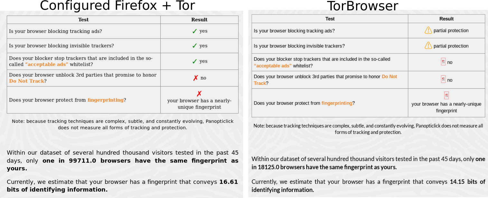
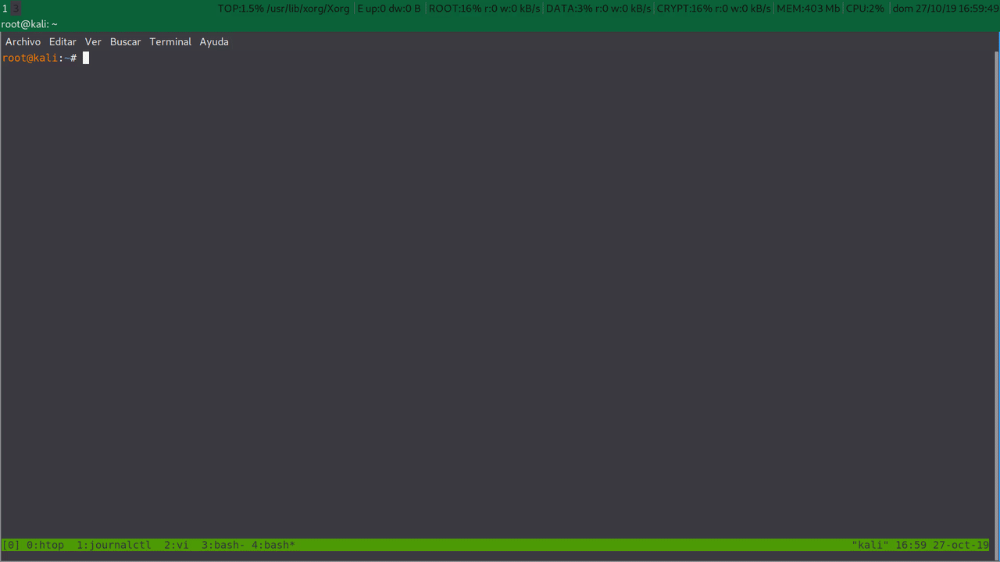

Privacidad con Firefox: Configuración y script.
Table of contents
Configuración.
Hoy en día para navegar con un poco de privacidad podemos: Usar un navegador de texto como linx sin funcionalidades como java, videos, css, … , usar torbrowser, o configurar firefox para navegar de manera lo mas segura y privada posible.
Copia de seguridad.
Lo primero que tenemos que hacer para no perder nuestros datos es una copia de nuestro perfil de firefox, se encuentra bajo el direcotrio de usuario.
~/.mozilla/firefox/xxxxxxxx.default
root@kali:~# cp .mozilla/firefox/l50cihg0.default .mozilla/firefox/l50cihg0.default.bkp
También podríamos hacer copia solo de los ficheros que nos interesen como marcadores o historial.
Empezando con lo básico.
Para elevar nuestra privacidad cuando navegamos, como explican nuestros amigos de Arch Linux en Firefox Privacy y de restoreprivacy, cambiaremos la configuración en about:config o en el fichero $home/.mozilla/firefox/$profile/prefs.js con los parámetros:
- user_pref(“browser.safebrowsing.malware.enabled”, false);
- user_pref(“browser.safebrowsing.phishing.enabled”, false);
- user_pref(“dom.event.clipboardevents.enabled”, false);
- user_pref(“geo.enabled”, false);
- user_pref(“media.eme.enabled”, false);
- user_pref(“media.navigator.enabled”, false);
- user_pref(“media.peerconnection.enabled”, false);
- user_pref(“network.cookie.cookieBehavior”, 4);
- user_pref(“network.cookie.lifetimePolicy”, 2);
- user_pref(“network.dns.disablePrefetch”, true);
- user_pref(“network.prefetch-next”, false);
- user_pref(“privacy.firstparty.isolate”, true);
- user_pref(“privacy.resistFingerprinting”, true);
- user_pref(“privacy.trackingprotection.enabled”, true);
- user_pref(“privacy.trackingprotection.fingerprinting.enabled” , true);
- user_pref(“privacy.trackingprotection.cryptomining.enabled” , true);
- user_pref(“webgl.disabled”, true);
instalaremos algunos addons,
arrancaremos firefox sin zona horaria,
root@kali:~# TZ=UTC firefox
root@kali:~#
eliminaremos extensiones ocultas para todo el sistema,
root@kali:~# ls -la /usr/lib/firefox-esr/browser/features/
total 5496
drwxr-xr-x 2 root root 319 sep 6 20:05 .
drwxr-xr-x 4 root root 163 sep 6 20:09 ..
-rw-r--r-- 1 root root 2603859 jul 10 00:13 activity-stream@mozilla.org.xpi
-rw-r--r-- 1 root root 8671 jul 10 00:13 aushelper@mozilla.org.xpi
-rw-r--r-- 1 root root 864581 jul 10 00:13 firefox@getpocket.com.xpi
-rw-r--r-- 1 root root 19037 jul 10 00:13 followonsearch@mozilla.com.xpi
-rw-r--r-- 1 root root 464592 jul 10 00:13 formautofill@mozilla.org.xpi
-rw-r--r-- 1 root root 5741 jul 10 00:13 jaws-esr@mozilla.org.xpi
-rw-r--r-- 1 root root 566768 jul 10 00:13 onboarding@mozilla.org.xpi
-rw-r--r-- 1 root root 1064261 jul 10 00:13 screenshots@mozilla.org.xpi
-rw-r--r-- 1 root root 9783 jul 10 00:13 webcompat@mozilla.org.xpi
root@kali:~#
root@kali:~# mv /usr/lib/firefox-esr/browser/features /usr/lib/firefox-esr/browser/features.bkp
y cambiaremos los buscadores por defecto que usa firefox.
Configurando user.js.
Como vemos en users.js, cuando iniciamos firefox las preferencias válidas que hemos agregado al archivo user.js se copian automáticamente al archivo prefs.js.
Para elevar todavía mas la privacidad de firefox tenemos la opción de crear nuestro propio fichero user.js. Un buen inicio es el fichero de pyllyukko. Simplemente lo copiaremos despues de leer los Problemas y limitaciones y añadiremos nuestras líneas de configuración específicas.
//Mi proxy rules for tor
//
user_pref("network.proxy.no_proxies_on", "localhost, 127.0.0.1, 192.168.8.0");
user_pref("network.proxy.socks", "127.0.0.1");
user_pref("network.proxy.socks_port", 9050);
user_pref("network.proxy.type", 1);
// Remove time marks
user_pref("app.update.lastUpdateTime.addon-background-update-timer", 0);
user_pref("app.update.lastUpdateTime.blocklist-background-update-timer", 0);
user_pref("app.update.lastUpdateTime.browser-cleanup-thumbnails", 0);
user_pref("app.update.lastUpdateTime.experiments-update-timer", 0);
user_pref("app.update.lastUpdateTime.search-engine-update-timer", 0);
user_pref("app.update.lastUpdateTime.xpi-signature-verification", 0);
// Disable Kali bookmark
user_pref("distribution.Kali.bookmarksProcessed", true);
Resultado
Tenemos una versión de firefox funcional y un poco menos expuesta a rastreos que nos permitirá navegar con ciertas limitaciones.
No tenemos que confundir la seguridad con al privacidad, ya que son cosas diferentes. No estamos configurando firefox para que sea mas seguro sino para que sea menos rastreable. Es tema para otro post como fortificar firefox y navegar de manera segura.
Tests de privacidad
Ahora podemos probar si nuestro navegador es rastreable. Hay algunos test online para probar como de único es nuestro navegador y que estamos exponiendo a terceros.
Enlaces para probar la privacidad de nuestro navegador.
Comparando con torbrowser
Nuestra configuración de firefox mas tor en comparación con torbrowser no difieren mucho.


Como podemos ver tenemos el Hash de canvas que nos delata …
Automatizando.
Resumen de funcionamiento del script
El script crea un direcotrio firefox_backup bajo el directorio $HOME/.mozilla/ del usuario, donde descargará los addons, el archivo user.js y donde hará el backup de los perfiles de firefox del usuario.
Instalará los addons para todos los usuarios en /usr/lib/mozilla/extensions/{ec8030f7-c20a-464f-9b0e-13a3a9e97384}/ o par un usuario unico en $HOME/.mozilla/firefox/xxxxxxxx.default/extensions. Por defecto se instalaran para todos los usuarios.
Moverá los addons ocultos de /usr/lib/firefox-esr/browser/features por si los queremos recuperar a /usr/lib/firefox-esr/browser/features.bkp , borrará el archivo pref.js y copiará en su lugar desde la carpeta firefox_backup el archivo user.js con nuestras preferencias. Para cambiar las preferencias tendremos que borrar $HOME/.mozilla/firefox/xxxxxxxx.default/user.js para que copie otra vez desde el backup.
Y arrancará firefox con zona horaria UTC.
Por otra parte podemos cambiar el usuario dentro del script arrancar firefox con otro usuario diferente que se creará solo para contener los datos de firefox y luego borrar todo ese contenido y el ususario. Para descargar usaremos /tmp para no perder datos descargados.
Script para navegar con firefox de manera mas privada.
Aquí dejo mi script de automatización para crear una copia de los perfiles de firefox, descargar y instalar addons automáticamente, eliminar prefs.js, los addons ocultos , descargar y instalar user.js y arrancar firefox con la zona horaria UTC.
Podeis descargar el script desde mis scripts públicos.
Y un ejemplo de ejecución.

Que queda por hacer
-
Investigar como eliminar el Hash de Canvas.
-
Guardar nuestro historial de navegación desde sqlite después de cada sesiona.
-
Arrancar firefox con tercer usuario y funcionalidades para X. (Sonido … )
-
Automatizar el cambio de los buscadores por defecto para usar: -Duckduckgo -Startpage
back
Referencias:
https://wiki.archlinux.org/index.php/Firefox/Privacy
https://github.com/pyllyukko/user.js
https://github.com/ghacksuserjs/ghacks-user.js
https://www.privacytools.io/browsers/#addons
https://restoreprivacy.com/firefox-privacy/
https://askubuntu.com/questions/73474/how-to-install-firefox-addon-from-command-line-in-scripts
http://jcarlosnorte.com/security/2016/03/06/advanced-tor-browser-fingerprinting.html
Licencia: CC-BY-SA